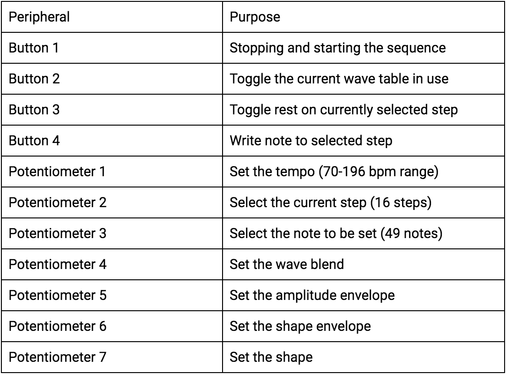
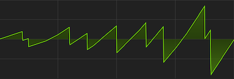
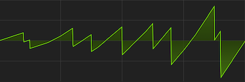

In our software, there are dozens of variables that refer to different synthesis
parameters. Two char arrays, step_notes and steps_on, represent the note and
activity (rest or note) of each step in the 16-step sequence. In step_notes, a
note is represented by an index, 0-48, into a table of phase accumulators,
calculated using freq_accum_calcs.rb, which can be found in the
Commented Program Files section.
The old_step_select, step_select, note_select, old_step, and curr_step variables
are used for sequence editing and playback, both to supply the TFT-update thread
with information it needs to draw the sequence state, and to facilitate reading
and writing data to/from the two sequence arrays mentioned above. The seq_active
variable is used in the DDS ISR to determine whether or not to add the sequence
advancing phase accumulator to the step_accum counter. The phase accumulators for
each tempo were calculated using tempo_accum_calcs.rb, which can be found in the
Commented Program Files section.
There are many flags, accumulators, and values that go into making the amplitude
and shape blend envelopes work. The amp_env, shape_env, and shape_amt variables
hold the values for the modal envelopes, and the attenuation amount for the shape
envelope respectively, all set directly from the ADC reading thread. The rising
variables are used as flags in the DDS ISR to determine whether to add or subtract
the accumulator. The rise_acc and fall_acc variables for both envelopes are set
using envelope rise/fall phase accumulators calculated in env_bound_accum_calcs.rb,
which can be found in the Commented Program Files section. These accumulators are
blended across the turn of the modal envelope knobs, allowing fades through
different envelope lengths and shapes.
Both envelopes are AD envelopes. At the left side of the knob, the envelope has
a short attack and long decay. As the knob moves towards the center of its turn,
the decay becomes longer until a certain keyframe, at which point the attack
starts lengthening, making the envelope's shape more triangular. After this
keyframe, the attack continues to become longer as the decay shortens, eventually
resulting in shapes inverse to those on the left side of the knob, in which the
attack is long but the decay is very short. The specific time values of each
envelope keyframe are listed in comments in env_bound_accum_calcs.rb.
Our DDS ISR (Direct Digital Synthesis Interrupt Service Routine) accomplishes
all the tasks it needs to very expediently. This is necessary because of the speed
at which it is run: 100kHz. In these 400 cycles, with cycles to spare for other
threads like the button or TFT threads,
The hardware for the synthesizer is composed of a PIC32 microcontroller,
7 potentiometers, 4 buttons, an 8:1 analog multiplexer, a 12-bit DAC,
and a TFT display. Using user input from the various potentiometers and
buttons, the PIC then generates different sequences and waveforms based
upon the current inputs.
A full hardware diagram can be found in the
Schematics
section.
Our TFT display is connected the way it has been for the previous labs,
using pins 4, 5, 6, 22, and 25.
Button/Knob Control Functions

Pin Connections

The PIC32 then used direct digital synthesis running at 100 kHz to generate
the correct waveform specified by the input settings. The generation of
the waveform required the use of an external 12-bit DAC, the MCP4822.
The DAC has two output pins, VoutA and VoutB, of which we only use VoutA.
VoutB is sent to ground, along with Vss, and the LDAC pins.
The DAC is responsible for the main deliverable portion of our project,
so its function is quite visible. However, the other main bit of
hardware in our setup is the CD4051B multiplexer, which takes input
signals from all of our potentiometers and relieves pressure on the PIC32’s
ADC capabilities. Most of the ADC pins on the PIC32 are taken up by the
TFT display, and so only four pins exist for our 7 analog inputs.
Clearly, even if we were to use all the ADC inputs, there would be a need
for multiplexing, as there would be three knobs unconnected. If we were
to use multiple ADC pins, then we would also have to re-configure the
ADC setup in order to multiplex between all the ADC pins.
Under the hood, there exists only one ADC in the microcontroller, so it
would be multiplexing between all of the ADC pins, in addition to the
multiplexing we would be doing on each pin. The CD4051B perfectly addresses
this issue, due to it having eight inputs, outputting a single signal which
we could read on the one ADC pin on the PIC32. Thanks to the multiplexer,
we can keep the existing ADC configuration. Although the multiplexer requires
three extra channel inputs, which are controlled by the PIC32, we have plenty
more options with it, seeing as they can be digital outputs. The multiplexer
takes Vdd from the PIC32 power rail, and uses all the signal input pins except
for Signal 5, which we grounded. The Vss, Vee, and INH pins were also sent
to ground.
In order to stabilize the voltage output by the PIC32, we placed various 10µF
capacitors between power and ground on the hardware. This smoothes out
spikes and drops in the 3.3V output of the microcontroller.
All of the preexisting code we used was boilerplate code from the ECE 4760
course website for setting up ISRs, DACs, I/O pins, and timers. We also
used the
Protothreads
library by Adam Dunkels, and the tft_master.c/tft_gfx.c libraries
provided by Professor Land.
The most vexing bottleneck in our project was getting the multiplexer to work
properly. After wiring it up according to the data sheet, it would only function
intermittently, working properly sometimes, and then being completely unresponsive
at others. In addition to this, when the hardware did function, a few potentiometer
inputs seemed to interact with others. Specifically, the first signal input would
be altered slightly by every other knob, and the sixth knob would bleed into all
other inputs. Since the multiplexer would work sporadically and unpredictably, it didn’t
seem as if software was the issue, though it was possible. When touching and bending
wires, we would occasionally be able to change the functionality of multiplexer, but
these events would not affect the multiplexer consistently.
One possible explanation for
this behavior takes into account the electric fields our bodies generate.
Depending on where we would poke wires and our own orientation, the multiplexer signal
wires could have been affected. This issue could be exacerbated by the fact
that we had channel select wires crossing over the analog outputs of the multiplexer,
which were both in close proximity to our power rails. This served as part of
the motivation to move our hardware setup to perfboard. To further address
the signal-to-noise issue, we placed capacitors between power and ground, and moved
wires away from the TFT display. In case of internally broken wires, we also
replaced all the signal wires connecting to the multiplexer. In order to address the
possible internal signal bleeding of the multiplexer, we grounded pin 5 of the multiplexer,
which equated to the 6th signal input, the multiplexer pins being 0-indexed.
After taking all the actions listed above, the multiplexer behaved more consistently, but
we were unable to read from more than 2 different sources, beyond which we received
garbage data. This issue this time was a software issue; we weren’t waiting
long enough between switching index bits to read the ADC pin. The PIC’s DigitalRead
settling time, internal ADC sampling speeds, and the multiplexer’s switching speed require
dozens of processor cycles of waiting, so we put in a delay of approximately a microsecond
before each read. The function for waiting 1µs included in the TFT library was not working
for some reason, so this wait was achieved using a for loop with no body.
Carrying out these fixes largely took care of all the issues we were seeing. Because we
implemented most of these methods in parallel, we were unable to isolate
one particular root cause of the malfunctioning, but taken together,
we would say that the issues were some combination of the challenges
mentioned above.
Another issue that was present throughout much of the project was the random
appearance of white dots on the TFT display. Over time after power-on, pixels
that should have stayed black would become white.The code never
called for white dots to be printed, so we couldn’t isolate the error. Our first
fix to this problem was to write a segment of the screen black every 10 seconds.
However, this was a purely aesthetic fix, which did not remove the underlying
problem.
Eventually, we realized that putting our sequencer's active-step TFT updates in an ISR
to achieve a constant, fast update at high tempos was the root of the problem. Since
we had TFT updates in this ISR, and in a separate thread used to update more slowly-
updating parts of the UI, there were many scheduling scenarios in which the serial data
sent to the TFT was corrupted. In some instances, this conflict would cause the PIC32
to crash entirely. After realizing the origin of our problem, we moved all TFT updates
to a single thread. This thread ran at 15-20 fps, and due to the less-frequent update,
our sequencer's active-step readout could be jumpy at certain sequence speeds. However,
we gained overall performance by eliminating this potentially fatal stress on the serial
data bus.
TOP
 
